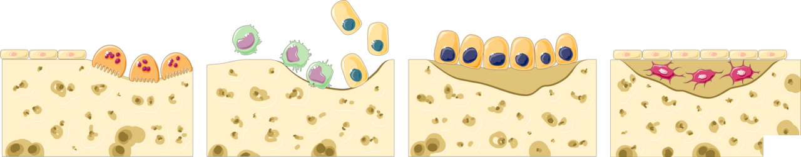

Đập Tan Định Kiến: Phụ Nữ Tập Tạ Có Bị "Đô Con"?
Trong nhiều thập kỷ, văn hóa thể hình đại chúng đã vô tình gieo rắc một nỗi sợ hãi vô căn cứ cho phái đẹp: "Nếu nâng tạ nặng, bắp tay bắp chân sẽ to bè và mất đi nét nữ tính mềm mại". Hậu quả là hàng triệu phụ nữ chỉ dám gắn bó với máy chạy bộ hoặc các quả tạ hồng 1 kg.
Về mặt nội tiết học sinh sản: - Nồng độ Testosterone tự do trong máu phụ nữ chỉ bằng 1/15 đến 1/20 so với nam giới trưởng thành. - Phụ nữ hoàn toàn không sở hữu đủ môi trường nội tiết tố androgen để phát triển các khối cơ bắp khổng lồ nếu không sử dụng các chất kích thích đồng hóa ngoại sinh (Anabolic Steroids). - Thay vào đó, tập kháng lực ở phụ nữ kích hoạt các thụ thể Estrogen Receptor Alpha (ER-α) trên tế bào cơ xương, giúp cơ bắp săn chắc, tăng mật độ ty thể, đốt cháy mỡ nội tạng và tạo nên đường cong thể hình khỏe khoắn.

Quy Luật Cơ Học: "Ngưỡng Cảm Ứng Xương" (Mechanostat Theory)
Xương không phải là các thanh xốp vô tri tĩnh tại; xương là một mô sống năng động liên tục tự tiêu hủy và tái tạo (Bone Remodeling): - Sau tuổi 30, quá trình hủy xương của các hủy cốt bào (Osteoclasts) bắt đầu vượt trội hơn quá trình tạo xương của tạo cốt bào (Osteoblasts). - Khi bước vào giai đoạn tiền mãn kinh và mãn kinh, sự sụt giảm đột ngột của estrogen khiến tốc độ mất xương tăng vọt lên 2% đến 3% mỗi năm, đẩy hàng triệu phụ nữ vào nguy cơ gãy xương hông và xẹp đốt sống do Loãng Xương (Osteoporosis).
Theo lý thuyết Mechanostat của Bác sĩ Harold Frost: Tế bào xương chỉ kích hoạt quá trình khoáng hóa khi chịu một lực biến dạng cơ học (Mechanical Strain) vượt qua một ngưỡng tới hạn (>1500 microstrain). - Các bài tập như đi bộ, bơi lội hay đạp xe có tác động tim mạch tuyệt vời nhưng hoàn toàn nằm dưới ngưỡng kích thích tạo xương. - Chỉ có lực nén dọc trục cơ thể từ các bài tập tạ nặng (Squat, Deadlift) hoặc lực va chạm mạnh (nhảy dây, tiếp đất) mới đủ sức uốn cong vi thể các bè xương, gửi tín hiệu điện áp (Piezoelectric effect) đánh thức tế bào tạo cốt bào.
Thử Nghiệm Lâm Sàng Đột Phá LIFTMOR (Watson et al., 2018)
Được công bố trên tạp chí y khoa danh giá Journal of Bone and Mineral Research, thử nghiệm lâm sàng ngẫu nhiên đối chứng LIFTMOR đã làm thay đổi hoàn toàn quan điểm y học về tập luyện cho phụ nữ: - Đối tượng: Các phụ nữ sau mãn kinh có mật độ xương thấp (thiếu xương hoặc loãng xương). - Giao thức can thiệp: Tập tạ nặng cường độ cao (High-Intensity Resistance and Impact Training - HiRIT) gồm 5 hiệp x 5 lần lặp ở mức tạ 80%–85% 1RM với các bài tập Deadlift, Overhead Press, Back Squat và động tác nhảy tiếp đất. - Kết quả kinh ngạc: Sau 8 tháng, nhóm tập tạ nặng tăng 2.9% mật độ khoáng chất xương tại đốt sống thắt lưng (Lumbar Spine) và 1.5% tại cổ xương đùi (Femoral Neck), đồng thời cải thiện vượt bậc sức mạnh cơ bắp và khả năng giữ thăng bằng mà không ghi nhận bất kỳ một ca chấn thương nào. - Ngược lại, nhóm đối chứng chỉ tập các bài tập nhẹ nhàng tại nhà tiếp tục bị mất xương (-1.2%).
Bảng So Sánh Các Lợi Ích Chuyển Hóa & Sinh Học Của Tập Kháng Lực
| Hệ Cơ Quan | Cơ Chế Sinh Học Được Kích Hoạt | Lợi Ích Trực Tiếp Cho Sức Khỏe Phụ Nữ | Tín Hiệu Trên Thiết Bị Đeo |
|---|---|---|---|
| Hệ Cơ Xương Khớp | Kích hoạt tạo cốt bào bồi đắp khoáng chất; tăng tiết collagen loại I ở gân dây chằng. | Đảo ngược tiến trình thoái hóa xương, ngăn ngừa xẹp đốt sống lưng, giảm đau mỏi thắt lưng mãn tính. | Điểm Tải Cơ Bắp (Muscular Strain) tăng, củng cố sự dẻo dai tổng thể. |
| Chuyển Hóa Glucose | Vận chuyển các kênh GLUT-4 lên màng tế bào cơ bắp không cần phụ thuộc vào insulin. | Hạ đường huyết sau ăn, đảo ngược tình trạng kháng insulin (đặc biệt quan trọng với người bị PCOS). | Giảm dao động đường huyết ban đêm; ổn định nhịp tim nghỉ ngơi RHR. |
| Tốc Độ Chuyển Hóa Cơ Bản (BMR) | Mỗi 1 kg khối lượng nạc (Fat-Free Mass) tiêu thụ calo gấp 3 lần so với mô mỡ khi nghỉ ngơi. | Đốt mỡ thừa tự nhiên suốt 24 giờ kể cả khi đang ngủ; duy trì cân nặng lý tưởng lâu dài mà không cần nhịn ăn. | Lượng Calo tiêu thụ thụ động hàng ngày tăng đều đặn. |
| Sức Khỏe Não Bộ & Giấc Ngủ | Tăng tiết yếu tố dinh dưỡng thần kinh có nguồn gốc từ não (BDNF) và Myokine từ cơ bắp. | Giảm lo âu trầm cảm, cải thiện trí nhớ, tăng tỷ lệ giấc ngủ sâu (Slow-Wave Deep Sleep). | Thời gian Deep Sleep tăng thêm 15%–25% trong đêm sau buổi tập tạ. |
Giao Thức 4 Bước Tập Kháng Lực An Toàn & Chuẩn Khoa Học
- Làm Chủ Chuyển Động Nguyên Bản (Movement Patterns): Bắt đầu bằng việc thuần thục 4 chuyển động nền tảng với trọng lượng cơ thể: Squat (Ngồi xổm), Hinge (Gập hông/Deadlift), Push (Đẩy ngực/Chống đẩy) và Pull (Kéo lưng). Chú ý kỹ thuật thở cơ hoành để bảo vệ sàn chậu.
- Nguyên Tắc Quá Tải Lũy Tiến (Progressive Overload): Khi đã nắm vững kỹ thuật, hãy tăng dần mức tạ đến ngưỡng thử thách (tập ở mức tạ mà bạn chỉ thực hiện được 6–10 lần lặp chuẩn form, tương đương 70%–80% 1RM). Duy trì 2 đến 3 buổi tập kháng lực toàn thân mỗi tuần.
- Cung Cấp Đủ Vật Liệu Xây Dựng Cơ & Xương: Nạp từ 1.6 đến 2.0 gam Protein trên mỗi kg cân nặng mỗi ngày (ví dụ: phụ nữ 55 kg cần nạp 90–110g protein) phân bổ đều qua 3–4 bữa ăn; kết hợp bổ sung Canxi hữu cơ (1000 mg/ngày) và Vitamin D3/K2 để định hướng canxi vào mô xương thay vì đóng cặn ở thành mạch máu.
- Chu Kỳ Hóa Theo Hormone (Cycle-Syncing): Xếp các buổi tập tạ nặng nhất (thử thách tăng mức tạ mới) vào Tuần 2 của chu kỳ (pha nang trứng muộn)—thời điểm estrogen đạt đỉnh giúp tối ưu hóa tổng hợp protein cơ và tăng sức chịu đựng thần kinh.
Nguồn Y Khoa Lâm Sàng & Tài Liệu Tham Khảo
- Sung, E., et al. (2014). Effects of follicular versus luteal phase-based strength training with equalized volume on muscle strength and mass in female athletes. SpringerPlus, 3(1), 668. Tạp chí SpringerPlus: Tập Kháng Lực Pha Nang Trứng vs Hoàng Thể (PMID: 25485203) ↗
- Hansen, M., et al. (2018). Effect of menstrual cycle phase on exercise-induced muscle damage and recovery. Scandinavian Journal of Medicine & Science in Sports, 28(6), 1629-1638. Tạp chí SJMS: Tổn Thương Cơ Bắp & Phục Hồi Theo Chu Kỳ (PMID: 29424458) ↗
- Frost, H. M. (2003). Bone's mechanostat: a 2003 update. The Anatomical Record Part A, 275(2), 1081-1101. Tạp chí Anatomical Record: Nguyên Lý Cơ Học & Mật Độ Xương Mechanostat (PMID: 14624414) ↗
- WHOOP Strength Trainer & Muscular Strain Research (2025). Quantifying Resistance Load Across Menstrual Phases. WHOOP The Locker: Training With Your Menstrual Cycle ↗